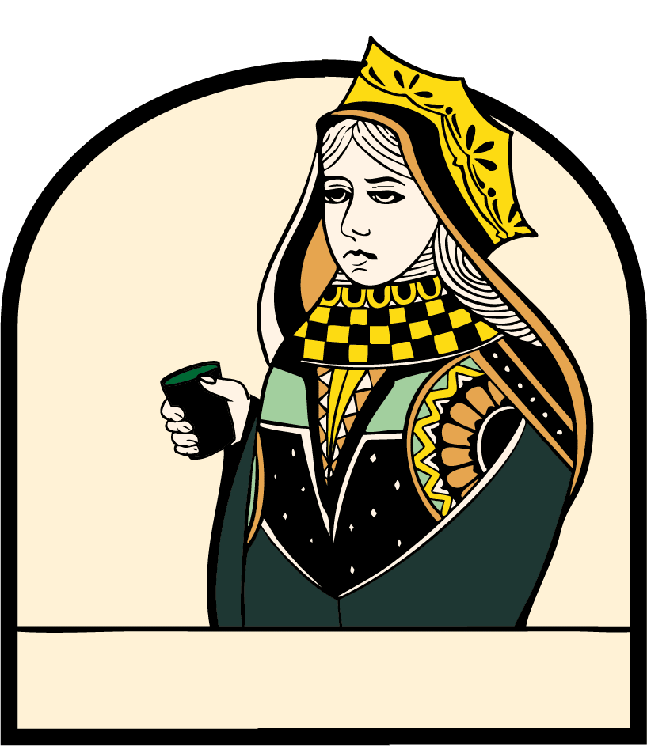
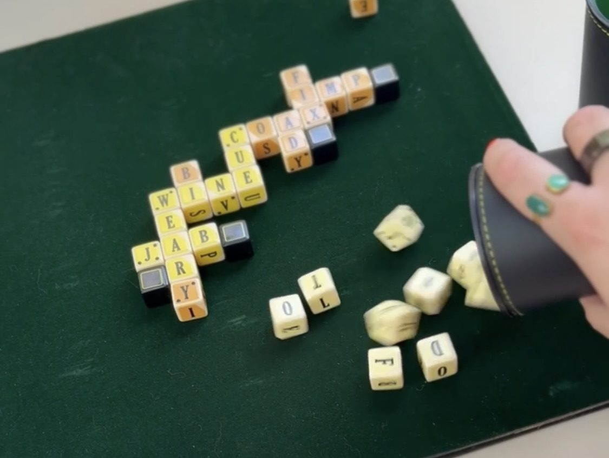

Launching June 9, 2026
On your phone
The iOS app brings Wordinarium to your pocket — quick rounds on your commute, daily puzzles over morning coffee, and endless head-to-head matches with a faraway friend.
Set reminder for launch day →Coming to iOS, the Wordinarium App, on June 9th.

Set a reminder for the app launch
10am, June 9 →
Dive into the designer’s process
Follow on Substack →
Playtester reviews
See what people are saying →
Wordinarium is playable in two ways — table top and online.
The iOS app brings Wordinarium to your pocket — quick rounds on your commute, daily puzzles over morning coffee, and endless head-to-head matches with a faraway friend.
Set reminder for launch day →The physical edition — 52 dice, one board, and a score booklet — will go into production this fall. Made for 2–4 players to play wherever is most scenic.
Check out the designer’s process →
This is the Bananagrams for date night. It’s chill and casual. You roll 11 letter dice, build a crossword, and protect it with a few block dice. The next player repeats the same sequence, building off the same board. Each round is a new roll of the dice and crossword created. Scoring is tallied by “1 point per word” created. There are some special rules that help multiply the word score. After a round per player is completed, the player with the most points is crowned the winner of the game.
Check out the rulesFrom recent playtests
“Wordinarium forces me to think about word creation in a different way compared to typical word games like Scrabble. Playing a successful move requires a lot more holistic…”
“I was so happy to be able to play the game again after getting a small taste of it at Christmas. I love the colors and the Bot was quick to play so it gave me great time to play and practice.”
“My grandmother beat me twice. She wants to know when she can buy a copy.”
Meet the designer
Anna Olinger is a product designer who also has a love for thrifting. December of 2024, she discovered a word-dice game from 1959 called Scribbage at an antique mall. As a lover of vintage games, she quickly became fascinated and began playing daily. Within a month, Anna had played so frequently that she created a completely new set of rules and additional pawns. After another year of playtesting, prototyping, and refinement, she created Wordinarium.
Tuesday, June 9 · Denver
We’re toasting the iOS launch with friends, family, and Denver locals. Come help us celebrate for a game, a drink, and free access to the Wordinarium App.
RSVP →